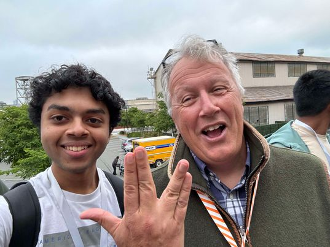

With Paul Graham—author, On Lisp (1993); founder, Y Combinator.
Hi, I'm Sathvik! I'm a pure math student at the California Institute of Technology and a part-time Research Scientist at TrainLoop, where I work on solving ARC-AGI.
Prior to college, I worked at Etched, founded an EDA lab called Instachip (YC W25), and founded a chip startup with 3 tapeouts on 20nm.
My research goal is to understand human cognition and build it into machines.
Contact me: sredrout@caltech.edu